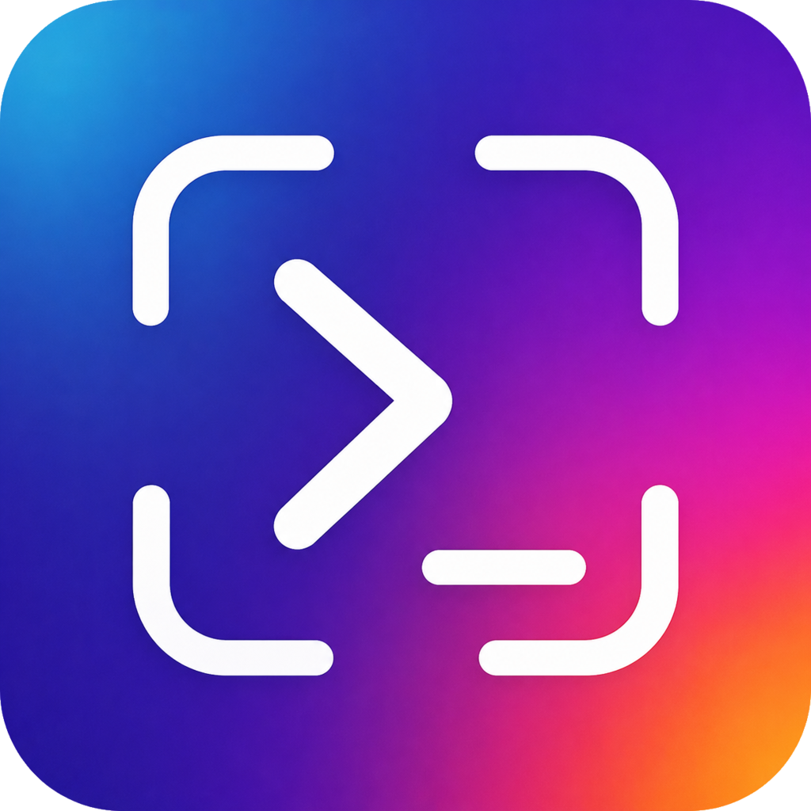

A team of agents.
One shared view.
Run Claude, Codex and your own CLI presets side by side. Split, drag and resize terminals into a layout that thinks like you.

superior Get SuperiorYour agents, terminals, code and browser. Finally in one place.
A calmer way to build ambitious things.
~/orbital / main
❯ Build something worth shipping.
I'll start with the checkout experience.
✓ Read project context
✓ Create checkout components
✓ Add responsive styles
✳ Refining the details...
~/orbital / new-checkout
❯ Review the changes and add tests.
Checking the new checkout flow.
+ checkout.test.ts
+ validates required fields
+ handles payment errors
✓ All checks passed
Ready for your review.
➜ orbital git status
On branch main · your next release starts here.01 export function Checkout() { 02 return ( 03 <section className="checkout"> 04 <h1>Make it yours.</h1> 05 <OrderSummary /> 06 <PaymentForm /> 07 </section> 08 ) 09 }
Keep the order summary visible on mobile.
Collect feedback. Send it straight to your agent.Give every project a home and every agent room to work. Stay close to the details without losing the bigger picture.
Run Claude, Codex and your own CLI presets side by side. Split, drag and resize terminals into a layout that thinks like you.
Keep experiments in their own Git worktrees. Configure project setup once, then give each new workspace a running start.
Preview your app in the built-in browser. Design Mode captures an element’s screenshot, HTML and CSS for your agent.
Edit files, inspect diffs and leave comments on specific lines. Send your feedback to a running agent without losing context.
Open a folder or connect over SSH.
Terminals survive desktop app restarts.
Keep Claude and Codex limits in view.
Check your agents from the sofa. Send the next instruction on the go. Pair the iOS or Android companion with your desktop and pick up your live terminal sessions.
~/orbital
❯ How's the checkout looking?
The new flow is ready for review.
✓ Responsive layout
✓ Form validation
✓ Tests passing
What would you like to refine?
Five platforms. One connected way to build.
Desktop installers on GitHub Releases. Mobile setup in the companion guide.
Bring your own agent CLIs and accounts.